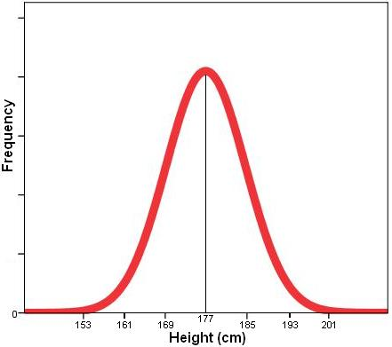

<html></html>

<head>

    <link rel="stylesheet" href="https://cdnjs.cloudflare.com/ajax/libs/font-awesome/4.7.0/css/font-awesome.min.css">
    <link rel="stylesheet" href="https://stackpath.bootstrapcdn.com/bootstrap/4.3.1/css/bootstrap.min.css"
        integrity="sha384-ggOyR0iXCbMQv3Xipma34MD+dH/1fQ784/j6cY/iJTQUOhcWr7x9JvoRxT2MZw1T" crossorigin="anonymous">
    <link rel="stylesheet" href="GaussianSplattimg.css">
    <meta name="viewport" content="initial-scale=1">
    <title>Why Signals Sounds and Waves?</title>
</head>

<body>
    <nav class="navbar sticky-top navbar-expand-lg navbar-light bg-light">
        <a class="navbar-brand" href="index.html">
            
        </a>
        <button class="navbar-toggler" type="button" data-toggle="collapse" data-target="#navbarNav"
            aria-controls="navbarNav" aria-expanded="false" aria-label="Toggle navigation">
            <span class="navbar-toggler-icon"></span>
        </button>
        <div class="collapse navbar-collapse" id="navbarNav">
            <ul class="nav justify-content-end">
                <li class="nav-item">
                    <a class="nav-link" href="index.html">Home <span class="sr-only">(current)</span></a>
                </li>
                <li class="nav-item">
                    <a class="nav-link" href="blog.html">Blog</a>
                </li>
                <li class="nav-item">
                    <a class="nav-link" href="contact.html">Contact</a>
                </li>
            </ul>
        </div>
    </nav>

    <div class="container">

        <div class="card-deck mx-auto">

            <div class="card">
                <div class="card-body">
                    <h1>What is a 'Gaussian Splat'?</h1>
                    <br>
                    <h4>A Gaussian</h4>
                    <br>
                    <p> 
                        A Gaussian distribution otherwise known as the normal distribution is a function, this isnt like the squiggly type of signals we typically see in audio, 
                        it's more of a bell shape (another name for it is the bell curve).
                        <br>
                        <br>
                        
                        <br>
                        <br> 
                        What is so interesting and so useful to stataticians about this bell curve is how often is crops up in nature. 
                        If we graph the heights of men in the uk; the more measurments we take from different individuals the more a pattern will emerge in our findings. We will find that the majority of 
                        mens heights converge on an average height and this average height specifies a point of symetry in our function. There will be both taller people and shorter people than the average 
                        height but the more they deviate away from the average height the fewer examples here will be. When we measure things this distribution occurs over and over again. 
                        It is fundamental to the way we read the world and so perfect for volumetric capture and computer graphics. Geat video from StatQuest here:
                        <a
                        href="https://www.youtube.com/watch?v=rzFX5NWojp0l">https://www.youtube.com/watch?v=rzFX5NWojp0</a>        
                        <br />
                        <br />
                    </p>


                    <h4>A Splat</h4>
                    <br>
                    <p>
                        The splatting part of the name relates to how a 3d asset is rendered to the screen.
                        <br>
                        <br>
                        Ultimately this comes down to a perspective and a visibility problem; what is our perspective on the 3d object and what parts of the
                        3d object are visible to us.
                        <br>
                        <br>
                        Two algorythms that seek to solve the perspective and visibilty problems are 'Ray Tracing' and 'Rasterization'.
                        <br>
                        <br>
                        A simple explanation would be that rasterization is an old technique that has proven essential for the 3d computer graphics we take for granted today. 
                        Raycasting is a newer technique that requires greater computation (GPUs). It aligns closely with how the human eye works and it does a very good job of rendering objects with complex lighting conditions and reflections.  
                        <br>
                        <br>
                        The following <a
                            href="https://www.scratchapixel.com/lessons/3d-basic-rendering/rasterization-practical-implementation/overview-rasterization-algorithm.html">link</a>
                        describes the two processes, pay particular attention to the pseudo code for each algorythm.
                        <br>
                        <br>
                        Notice the outer and inner loops in the psuedo code; the outer loop in ray tracing iterates over all pixels in the
                        image, the algorythm is descibed as 'image centric'.
                        The outer loop in rasterisation iterates over all triangles and is described as being 'object centric'.
                        <br>
                        <br>
                        Rasterisation..
                    </p>
                    <p>
                    <figure>
                        <blockquote
                            cite="https://www.scratchapixel.com/lessons/3d-basic-rendering/rasterization-practical-implementation/overview-rasterization-algorithm.html">
                            "..starts with the geometry and works its way back to the image, as opposed to the ray tracing approach, which
                            begins with the image and works its way into the scene."
                        </blockquote>
                        <figcaption>—Scratchapixel,
                            <cite>https://www.scratchapixel.com/lessons/3d-basic-rendering/rasterization-practical-implementation/overview-rasterization-algorithm.html</cite>
                        </figcaption>
                    </figure>
                    <br>
                    <br>
                                        
                    </p>
                    
                    

        <div class="container footer">
            <p class="text-muted" style="text-align: center;">
                Website by William Eden.<br />
                <a href="https://www.linkedin.com/in/william-eden-93bb91111/" class="fa fa-linkedin"></a>
            </p>

        </div>


    </div>
    <script src="https://code.jquery.com/jquery-3.3.1.slim.min.js" integrity="sha384-q8i/X+965DzO0rT7abK41JStQIAqVgRVzpbzo5smXKp4YfRvH+8abtTE1Pi6jizo" crossorigin="anonymous"></script>
    <script src="https://cdn.jsdelivr.net/npm/popper.js@1.14.7/dist/umd/popper.min.js" integrity="sha384-UO2eT0CpHqdSJQ6hJty5KVphtPhzWj9WO1clHTMGa3JDZwrnQq4sF86dIHNDz0W1" crossorigin="anonymous"></script>
    <script src="https://cdn.jsdelivr.net/npm/bootstrap@4.3.1/dist/js/bootstrap.min.js" integrity="sha384-JjSmVgyd0p3pXB1rRibZUAYoIIy6OrQ6VrjIEaFf/nJGzIxFDsf4x0xIM+B07jRM" crossorigin="anonymous"></script>
</body>